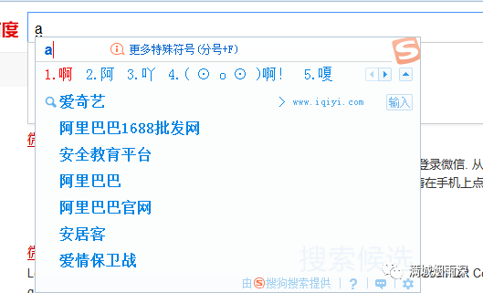
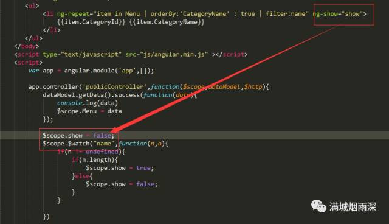

这是什么功能，大家一定是不陌生，现在大部分的浏览器也好，反正只要是个输入框，那么我想这种智能式的筛选并显示出来的功能大家一定见过；
那么这种高大上的功能是如何做出来的呢？作为一个成熟的js框架，angularJS处理这种问题，自然是小菜一碟；
filter，管道，过滤器，顾名思义，做到这宗功能一定要借助于过滤器的作用，很明显，无论你输入什么字母，后台自动返给你的数据一定是存在于各大服务器的数据库中的，前端你所看到的数据，一定是后台根据某种机制筛选后返回给你的；
所以，接下来，我们来看如何通过一个自定义的filter来完成这种高大上的功能；

首先，你要展示数据，肯定要有数据，用factory自定义一个dataModel，用于获取数据（需要充分发挥angular的mvc模式，将数据获取从controller中剥离开来)；
然后将数据绑定到前端页面；

用$scope.Menu绑定数据；

首先，看到用ng-repeat指令将数据遍历出来；

OK，现在可以看到所有的数据都是显示出来的，然后我们可以看到ng-repeat中有两个“|”，根据字面意思可以看出，一个是orderBy，也就是排序，可以看到，数据是由中文来进行排序的，而后面的filter也就是进行筛选的过滤器，可以看到它是根据“name”进行过滤的，而name是通过上方的input进行ng-model的绑定，因此，我们可以输入任意字母或中文进行筛选；
可以看到，现在输入“a”的话，所有匹配有字母“a”的选项就都显示出来了；
基本功能都出来了，现在就是要实现，未输入的时候不显示，输入字母才显示的格式。

增加一个$watch就可以实现该功能了，首先我们利用ng-show来控制数据的展示还是隐藏，可以看到，我们默认$scope.show = false,所以，我们未作任何动作的话，是没有内容显示出来的，而当我们进行输入时，$watch检测到name变量的变化，只要输入框内有值，那么n.length肯定为真，所以，显示出内容，而当你删除内容时，输入框n.length为false，则重新隐藏内容；